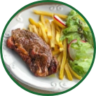
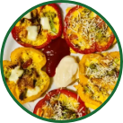

Beranda Resep Artikel Menjadi Vegan?
|
Tahu Teriyaki Mudah 28 Menit |
Terong Goreng Mudah 15 Menit |
 Steak Tahu Menengah 35 Menit |
Sup Labu Mudah 20 Menit |
|
Nugget Jamur Tiram Sulit > 1 hari |
 Omelet Paprika Mudah 15 Menit |
French Onion Soup Menengah 70 Menit |
Sate Jamur Mudah 15 Menit |
Tampilkan Lebih Banyak |
|||
|---|---|---|---|